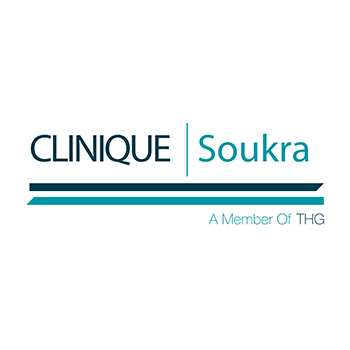
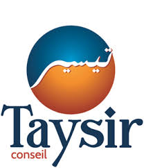
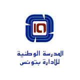
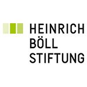

Clinique Soukra
Refonte des processus managériaux par l'adoption de la démarche compétences
En 10 ans, la Clinique a vécu une croissance rapide qui a engendré des dysfonctionnements organisationnels. Forte d'un personnel de plus 400 personnes, la Clinique s'est lancée dans un processus de refonte de ses processus managériaux dans le but de faire évoluer et d'améliorer son organisation du travail et par conséquent l'efficacité des équipes.
Afin de clarifier les rôles et missions de chacun, et d'identifier les interactions entre différents services d'une part, et entre le pôle managérial et le pôle paramédical d'autre part, plus de 100 fiches de postes et 40 référentiels de métiers et compétences ont été rédigés, grâce à des entretiens avec l'ensemble du personnel.
La Clinique a non seulement structuré et affiné son organisation, mais elle a également amélioré ses processus managériaux comme la formation, le recrutement et l'évaluation annuelle des performances du personnel. L'établissement a par ailleurs réussi à obtenir en 2017 son accréditation de la part de France Accréditation, qui inclut dans les pratiques exigibles prioritaires de chaque établissement évalué la Politique et l'organisation de l'évaluation des pratiques professionnelles.
Taysir Conseil
Evaluation finale du projet de Taysir Conseil
Trois ans après le début du projet, Taysir Conseil, avec ses partenaires de projet dont notamment ADIE International, a souhaité mener une évaluation finale afin de mesurer et d'analyser l'état d'avancement des activités et la réalisation des résultats de son projet.
Une évaluation a été conduite, mêlant analyse documentaire, enquêtes par questionnaires, interviews et focus groups avec les principales parties prenantes du projet, y compris les bénéficiaires.
L'évaluation a permis de dresser un état des lieux précis, mais aussi de proposer des recommandations concrètes et pertinentes pour améliorer la mise en œuvre des activités et leur suivi et pour assurer un bon apprentissage au cours de la seconde partie du projet.
ELBA Tunisie, Groupe Hamelin
Recherche et sélection d'un Directeur d'Usine
Recherche et sélection d'un Directeur d'usine
Suite à la montée en cadence de la production du site d'Elba Tunisie, rattaché au Groupe français Hamelin spécialisé en papeterie et fournitures de bureau, des besoins en amélioration de l'organisation, des processus et des méthodes ont été constatés. Par conséquent, le site avait besoin d'un directeur avec une nouvelle vision industrielle et de fortes compétences managériales.
Un processus de recherche de profils adéquats par approche directe et par appel à candidatures a été lancé. Les profils sélectionnés suite aux premiers entretiens ont été reçus pour des évaluations approfondies des personnalités des candidats et de leurs aptitudes managériales. Le résultat de ces évaluations ont aidé le Groupe dans sa prise de décision finale.
Un nouveau directeur d'usine dont le profil correspondait au référentiel établi et aux besoins de l'usine a été recruté.
Coaching dans le cadre de la formation « Agents de changement » à l'Académie Internationale de la Bonne Gouvernance au sein de l'ENA
Ecole Nationale d'Administration et GIZ
Les hauts cadres de l'administration publique tunisienne n'ont pas, à ce jour, suffisamment accès à une formation mettant en avant la dimension pratique qui leur permettrait d'acquérir et d'approfondir les qualifications ainsi que les compétences requises dans le contexte actuel. Il y a notamment un besoin d'accompagnement pour mener à bien le processus de transformation dans les différents secteurs politiques, dans le domaine du leadership, de la gestion du changement et du travail en équipe et ce dans le cadre d'un Etat de droit démocratique. L'Académie Internationale de la Bonne Gouvernance (AIBG) offre des cycles de formation pour des hauts cadres issus de l'administration publique, du secteur privé et de la société civile afin de renforcer les bonnes pratiques et le respect des principes de la bonne gouvernance dans la gestion publique. Selon son approche multi-acteurs et multisectorielle, l'Académie Internationale de la Bonne Gouvernance se propose ainsi de renforcer le changement politique dans des domaines concrets.
Coaching et appui technique pour l'élaboration d'un projet de changement
Un coaching dans la gestion du changement et le transfert des savoirs acquis lors des formation est proposé aux participants. Il consiste en l'accompagnement et l'animation du groupe des participants tout au long de la formation afin de garantir que le projet de changement concret soit réellement établi à la fin de la session par les participants. Un appui technique et méthodologique en conception de projet est également fourni aux cadres participants.
Un nouveau directe Deux groupes de 30 hauts cadres de la fonction publique ont été accompagnés en 2016 et 2017 dans l'élaboration de deux projets de changement portant sur "la bonne gouvernance de la commande publique dans le secteur de la santé" et sur "la bonne gouvernance des projets publics".ur d'usine dont le profil correspondait au référentiel établi et aux besoins de l'usine a été recruté.
Etude de positionnement des principaux partis politiques tunisiens en matière de politique énergétique et environnementale
La Fondation des Verts Allemands Heinrich Boell
Le programme de la Fondation Heinrich Boell se focalise sur l'axe des politiques énergétiques et de la gouvernance des ressources naturelles. Elle ambitionne de s'impliquer davantage sur ces thématiques en apportant son appui technique aux débats et projets de réforme à venir.
Une étude sur les visions et propositions des principales formations politiques tunisiennes a été réalisée. D'abord, une analyse comparative des propositions des partis politiques ciblés a été menée sur la base de leurs programmes électoraux. Ensuite, une enquête par questionnaire et des interviews ont été conduits avec les partis concernés.
réalisation d'une étude
L'étude a apporté des clarifications sur le positionnement des formations politiques sur la question environnementale et écologique et sur leur vision de la transition énergétique en Tunisie.